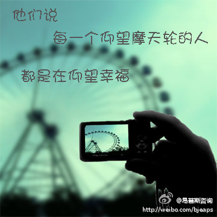

”哈佛幸福课“的讲师要来北京了。 @李建中心理咨询师 @丽宇心理咨询师 @cleverpig@易普斯咨询:【晒晒】一张与幸福有关的照片，或者【说说】你觉得幸福是什么。关注 @易普斯咨询 ，并 @ 3位好友，即有机会领取哈佛大学 “幸福课”讲师泰勒•本-沙哈尔博士2012年4月10日的讲座门票，【同时】亦可获得泰勒•本-沙哈尔亲笔签名的书籍《幸福的方法》。中国EAP与PCA年度论坛网址：网页链接 